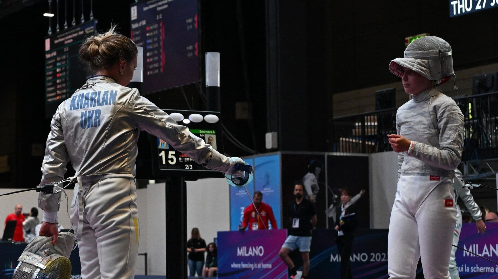
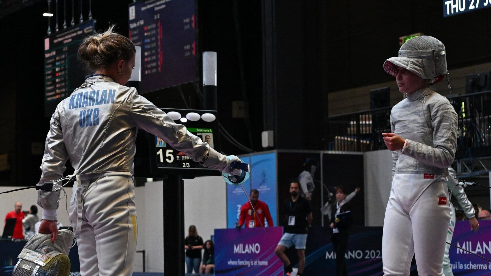
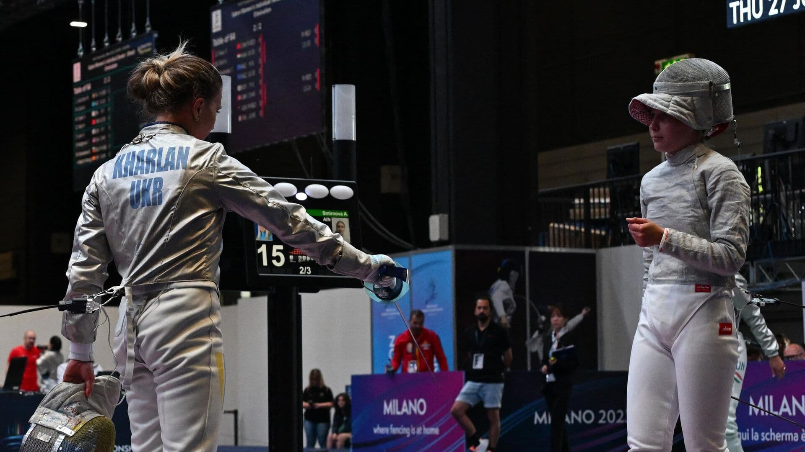

⬆

Фехтува́ння (від нім. Fechten) — спортивне єдиноборство.
⨭ різновид спорту для чоловіків і жінок
⨭ мистецтво двобою холодною зброєю (рапірами, шпагами, шаблями), поширений з XIII—XIV сторіччя;
Фехтування — суто індивідуальний вид спорту. Навіть у командних змаганнях бої проводяться один на один.
Фехтування є олімпійським видом спорту.
Був поширений давніше переважно аристократами і військовою елітою. Входить у програму олімпійських ігор. Серед радянських чемпіонів багато українців: В. Жданович, Я. Рильський, С. Косенко та ін. В Україні вправляються у фехтуванні понад 10 000 спортсменів. У 2004 році на Олімпіаді в Сіднеї Владислав Третяк завоював бронзову медаль у індивідуальних змаганнях шаблістів. У 2008 році золоті медалі на Олімпіаді в Пекіні здобула жіноча команда зі шаблі. До складу команду входили Ольга Жовнір, Ольга Харлан, Олена Хомрова та Галина Пундик, а президентом федерації фехтування України тоді був Міщенко Сергій Олександрович. 2012 року Яна Шемякіна здобула золоту медаль в шпазі, а Ольга Харлан — бронзову у змаганнях з шаблі.
Бій між двома фехтувальниками на будь-якому виді зброї проводиться на спеціальній доріжці, шириною 1,5 — 2 м і завдовжки 14 м, зробленою з електропровідного матеріалу, яка ізольована від реєструючого уколи або удари апарату.
Бій управляється і оцінюється арбітром. Уколи і удари, нанесені фехтувальниками, реєструються лампами на електричному апараті. Фіксуються вони на основі електричної схеми, що проходить через зброю фехтувальника і його одяг, пов'язаних з апаратом дротяною системою. Арбітр оцінює удари і уколи, ґрунтуючись на свідченнях реєструючого апарату при обліку правил бою в кожному виді фехтування. Бої у видах зброї мають власні специфічні правила, що дозволяють зараховувати уколи і удари або оголошувати їх недійсними.
Розрізняють такі види спортивного фехтування залежно від використовуваної зброї:
⨮ Фехтування на рапірах
⨮ Фехтування на шпагах
⨮ Фехтування на шаблях
⨮ Фехтування на важкій клинковій зброї (історичне)